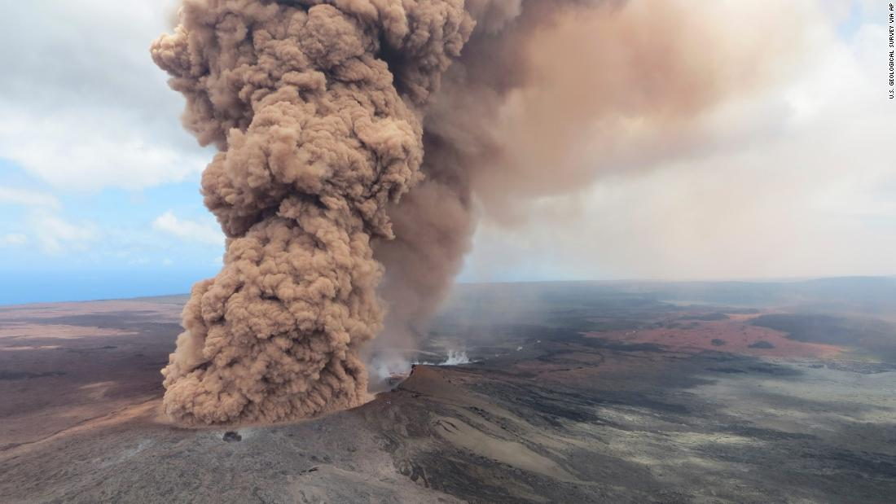
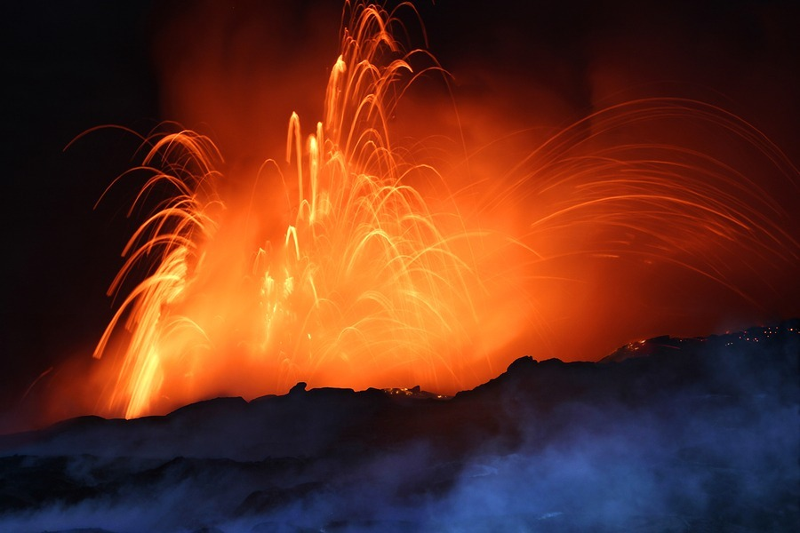

🌋
Os Volcáns
Tamen podes visitar
Que é un Volcán?
Curiosidades dos volcáns
Vocáns mais famosos do mundo
Hai moitos volcans no mundo pero estes son os mais conocidos
Volcans máis coñecidos

O volcán Kīlauea
Monte Fuji
